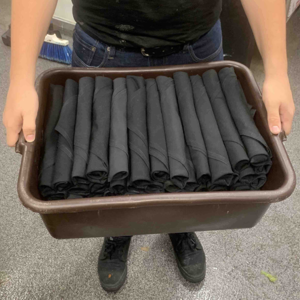
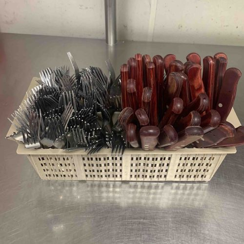
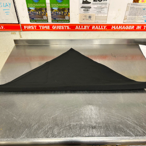
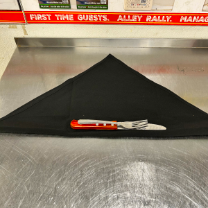
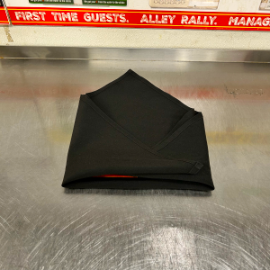
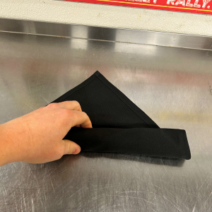

Silver Bin

Put on gloves.
Whenever handling silverware, you must be wearing gloves.
Sort cleaned silverware into caddy.
Dish will periodically clean silverware automatically, but if you need some you can ask politely that they clean it for you.
Run your sorted caddy through dish.
This is what your caddy should look like:

Polish each piece of silverware.
Using a clean towel or linen, wipe off any water on all knives and forks.
Roll 5 rows of 12 (60 total) into a bin.
Bins can be found in dry storage, and here is a visual, step-by-step, guide to rolling:
1

2

3

4
